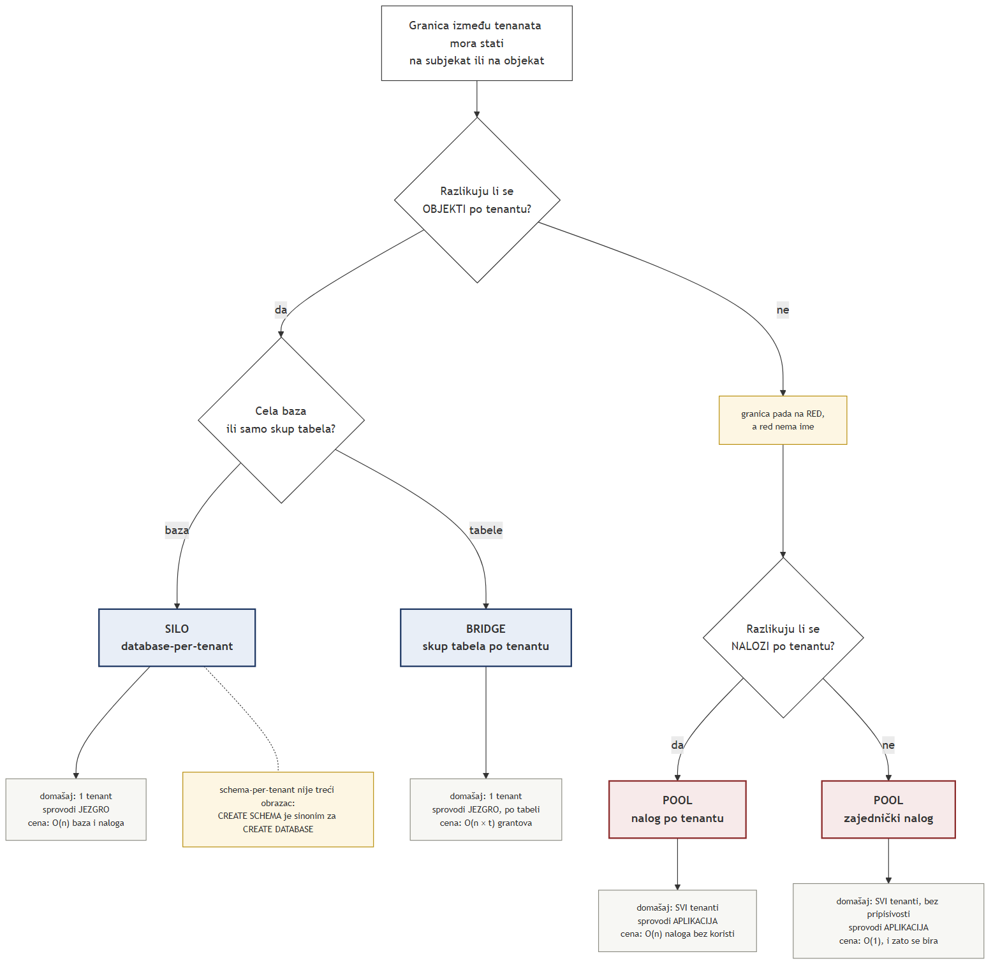

Lekcija 06 · Poglavlje 7 (Multi-tenant bezbednosni modeli)
Poglavlje 7 nije četvrti model kontrole pristupa. To je jedno projektantsko pitanje na koje se odgovara svime što su poglavlja 2–6 utvrdila — i mesto gde nit najmanjih privilegija, koja traje od poglavlja 2, konačno sleće.
Iz poglavlja 2 stoji da je odluka o pristupu uvek trojka (subjekat, objekat, operacija). Poglavlja 3 i 4 su svaku koordinatu popunila konkretnim MySQL sadržajem:
| subjekat | red u mysql.user koji je prvi korak izabrao — to je CURRENT_USER() |
| objekat | baza, tabela, kolona ili rutina — ono što GRANT imenuje |
| operacija | SELECT, INSERT, UPDATE, … |
U toj tabeli nema reči tenant. Podružnica Bar nije ni subjekat, ni objekat, ni operacija — to je pojam poslovnog sveta, a ne pojam baze. Odatle sve ostalo:
CURRENT_USER() imenuje red, ne konekcijuPre nego što se krene dalje, jedan čvor mora da stoji precizno, jer ceo argument o pulu visi o njemu. Manual razdvaja dve funkcije jasno:
Manual daje i krajnji slučaj, koji sam po sebi razrešava svaku zabunu:
mysql> SELECT USER();
-> 'davida@localhost'
mysql> SELECT CURRENT_USER();
-> '@localhost'Klijent je rekao da je davida. Server je za taj zahtev izabrao anonimni
nalog — prazno korisničko ime. Ista sesija, a ne poklapa se ni korisničko ime, ne samo host.
Ovo nije nov podatak nego opštiji oblik dva koja već stoje. Iz poglavlja 5: prvi korak bira
tačno jedan red, najuži host prvi, bez povratka na širi — CURRENT_USER()
je ime tog reda. A poznati slučaj SQL SECURITY DEFINER pogleda iz
lekcije 03 je isti iskaz, ne izuzetak: unutar definer konteksta
proveravaju se definerove privilegije, pa CURRENT_USER() imenuje njegov red.
CURRENT_USER() imenuje red, onda broj različitih identiteta koje baza može
da razlikuje nije broj korisnika — nego broj redova u mysql.user.
Četiri hiljade zaposlenih iza jednog reda daju bazi tačno jedan identitet.
Dve koordinate smeju da se razlikuju po tenantu. Prebrojimo koliko njih zaista razlikujemo.
Obe. Svaka podružnica dobija svoju bazu i svoj nalog:
GRANT … ON pod_bar.* TO 'app_bar'@'…'. Granica stoji u oba imena, jezgro je proverava u
drugom koraku, i nalog iz Bara ne dohvata Nikšić ni ako aplikacija ima bag — nema grant.
To je silo obrazac, u AWS-ovoj terminologiji, odnosno database-per-tenant
kod Azure-a.
Nijednu. Svi dele istu tabelu, a pripadnost nosi kolona tenant_id.
To je pool. Granica je pala na red, a red nije ni subjekat ni objekat —
to je tačno kolonski plafon iz lekcije 03:
red nema ime, pa nema šta da stoji u grant tabeli.

Literatura navodi i treći, srednji obrazac; PostgreSQL i Oracle tekstovi — i naš memorandum 07 — zovu ga schema-per-tenant. Ime se oslanja na reč šema, a ta reč u MySQL-u ne znači ono što znači drugde:
To je odluka o imenovanju koja se prima zdravo za gotovo — ne sledi ni iz čega. U PostgreSQL-u i Oracle-u šema je imenovani prostor unutar baze, pa su tamo „šema po tenantu" i „baza po tenantu" dve stvari. U MySQL-u su dve reči za isto.
Ono što u MySQL-u stvarno postoji kao srednji slučaj jeste jedna baza sa zasebnim skupom
tabela po tenantu (bar_diagnoses, niksic_diagnoses, …). Ali to ne uvodi
novi nivo granta: ne postoji ime koje pokriva „sve objekte tenanta Bar", pa umesto jednog
GRANT … ON pod_bar.* dobijaš grant po tabeli, po tenantu. Isti stepen izolacije, veći
trošak administracije — dakle lošija varijanta silo obrasca, a ne kompromis između dva.
Dosad se obrazac birao slobodno. Sad dolazi ograničenje koje ne postavlja projektant baze nego arhitektura aplikacije. Konekcije su skupe, pa aplikacija drži šačicu otvorenih i deli ih između zahteva — a da bi se konekcija delila, mora biti otvorena kao jedan nalog, isti za sve tenante.
Primeni na to čvor iz odeljka 2: jedan nalog → jedan red u mysql.user → jedna vrednost
CURRENT_USER() za sve tenante. Baza nije delimično slepa za tenanta, nego potpuno:
informacija o podružnici nikada nije ni ušla u server.
Uobičajena krpa je sesijska promenljiva — SET @tenant_id = 7;, pa pogled filtrira po
njoj. To je Pattern B iz lekcije 03 i pada iz istog razloga:
vrednost postavlja isti klijent koji se njome ograničava. Mera koju ograničavani sam sebi
dodeljuje nije kontrola pristupa.
A zašto se ne može popraviti ni grantovima, sledi iz OR-kompozicije iz
lekcije 02: uži grant nikada ne sužava širi, pa ne postoji
GRANT koji popravlja pool nalog.
Iz lekcije 05 već stoji da pod zajedničkim pulom puca pripisivost, dok preostala tri kriterijuma audit trail-a i dalje važe. Sad se vidi da puca i izolacija. To nisu dva problema:
| izolacija | pada unapred — baza ne može da odbije zahtev jer nema po čemu da razlikuje |
| pripisivost | pada unazad — baza ne može da kaže ko je bio jer nikada nije ni znala |
Jedan defekt, dva lica, i zato se nijedno ne popravlja nizvodno: ne može se povratiti informacija koja nikada nije stigla. Slanje logova na zaključan server, čuvanje 12 meseci i potpisivanje kupuju rok čuvanja i otpornost na izmenu — a pripisivost i izolaciju ne kupuju uopšte.
Nit ide od poglavlja 2, u izvornoj formulaciji Saltzer–Schroeder-a (1975): „Every program and every user of the system should operate using the least set of privileges necessary to complete the job." Ovde načelo postaje merljiva veličina:
silo (database-per-tenant) | domašaj 1 · sprovodi jezgro, u drugom koraku · cena: O(n) baza i naloga, migracija n puta |
| „bridge" (skup tabela po tenantu) | domašaj 1 · sprovodi jezgro, ali po tabeli · cena: O(n × t) grantova |
| pool + nalog po tenantu | domašaj svi · sprovodi aplikacija · cena: O(n) naloga, bez koristi od njih |
| pool + zajednički nalog | domašaj svi, i bez pripisivosti · sprovodi aplikacija · cena: O(1) — i zato se bira |
OR-om, a uži grant ne sužava širi.
poliklinika je namerno na ispravnoj strani te odluke: 12 naloga
<uloga>_<podružnica>, svaki sa svojim redom u mysql.user, pa
CURRENT_USER() nosi podružnicu. Zato pogled
v_my_branch_diagnoses uopšte može da radi — on podružnicu čita iz staff
preko CURRENT_USER():
WHERE d.tenant_id = (
SELECT s.tenant_id FROM staff s
WHERE s.mysql_account = SUBSTRING_INDEX(CURRENT_USER(), '@', 1)
LIMIT 1
)Sa zajedničkim pool nalogom taj isti pogled vratio bi ili prazan rezultat ili tuđe redove — jer
CURRENT_USER() više ne bi imenovao nikoga konkretnog. Pool nalog u radu zato ostaje
strawman u prozi i nikada se ne pravi na serveru.
Provera — odgovaraj po sećanju, bez vraćanja gore.
1. Nalog postoji u mysql.user samo kao 'izvestaj'@'%'. Dve sesije se otvaraju sa dve različite mašine. Šta se razlikuje?
USER() nosi stvarni klijentski host; CURRENT_USER() imenuje jedini postojeći red, pa je u obe sesije isti.
2. Zašto granica između tenanata ne može da stane na red tabele?
Grant imenuje objekat; kolona je plafon granularnosti jer je poslednji imenovani nivo.
3. Šta je „schema-per-tenant" na MySQL-u?
CREATE SCHEMA je sinonim za CREATE DATABASE — dve reči za istu stvar.
4. Aplikacija posle uzimanja konekcije izvrši SET @tenant_id = 7;, a pogledi filtriraju po toj promenljivoj. Šta se time postiže?
Pattern B iz poglavlja 4: korisnička promenljiva je pod kontrolom onoga koga ograničava.
5. Logovi se šalju na zaključan server, čuvaju 12 meseci i potpisuju. Pool nalog ostaje isti. Šta se popravlja?
Nizvodno se kupuje samo ono što je stiglo do zapisa; podružnica nikada nije stigla do servera.
6. Poliklinika ide na pool sa zajedničkim nalogom. Šta MySQL u toj postavci sprovodi?
DAC provera radi punom snagom — samo nad koordinatama koje baza ima, a tenant nije jedna od njih.
Rezultat: 0 / 0